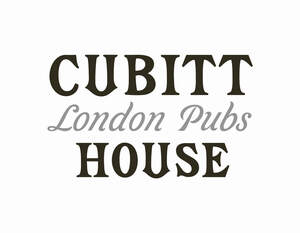

Trade Mark Journal No.2025/042 17 October 2025
UK00004270997 29 September 2025 (8,16,18,21,24,25,27,30,31,32,33,35,41,43)

- Class 8
- Cutlery.
- Class 16
- Advertising posters and publications; Advertising signs of card or paper; Mats of card and paper for beer, cocktail and other drinking glasses; Pencils; Stationery; coffee table books; cards; greeting cards; Christmas cards; holiday cards; birthday cards; post cards; wrapping paper; gift wrapping paper; stickers; decals.
- Class 18
- Umbrellas.
- Class 21
- Bottles; Crockery; Drinking bottles; Drinking glasses; Glass bottles; Glasses; drinking vessels and barware; Mats for beer, cocktail and other drinking glasses not made of paper or textile; Reusable bottles; Glassware; tumblers for drinking; water bottles; wine glasses; glasses (drinking vessels); beer glasses; whisky glasses; cocktail glasses; tableware; dishware; plates.
- Class 24
- Textiles and substitutes for textiles; household linen; curtains of textile or plastic; Bed blankets; blankets; bed linen and blankets; bed coverings; bed quilts; sofa blankets; bed spreads; throws; napkins; cloth napkins; table clothes; towels; towels of textiles.
- Class 25
- Clothing, footwear and headgear, namely caps, pyjamas, t-shirts, shirts, trousers and slippers.
- Class 27
- Rugs; carpets; bathroom rugs.
- Class 30
- Coffee, tea, cocoa and artificial coffee; rice, pasta and noodles; tapioca and sago; flour and preparations made from cereals; bread, pastries and confectionery; chocolate; ice cream, sorbets and other edible ices; sugar, honey, treacle; yeast, baking-powder; salt, seasonings, spices, preserved herbs; vinegar, sauces and other condiments; ice (frozen water); tomato sauce; tomato ketchup; brown sauce; easter eggs; chocolate eggs; Christmas truffles; Christmas pudding.
- Class 31
- Raw and unprocessed agricultural, aquacultural, horticultural and forestry products; raw and unprocessed grains and seeds; fresh fruits and vegetables, fresh herbs; natural plants and flowers; bulbs, seedlings and seeds for planting; live animals; foodstuffs and beverages for animals; malt.
- Class 32
- Beers; non-alcoholic beers; ales; porters; alcoholic malt beverages; mineral and aerated waters and other non-alcoholic drinks; fruit drinks and fruit juices; syrups and other preparations for making beverages.
- Class 33
- Alcoholic wines; spirits and liqueurs; alcoholic cocktails; alcoholic beverages; flavoured and spiced alcoholic beverages; pre-mixed alcoholic beverages.
- Class 35
- Administrative hotel management; Business management of bars and pubs; Business management of hotels; Business management of restaurants; Retail services in relation to glasses, drinking vessels and barware.
- Class 41
- Entertainment services provided by hotels; Provision of entertainment facilities in hotels; Training services relating to the cleaning of hotels, restaurants, pubs and bars; Training relating to the hotel industry; Training relating to the restaurant industry.
- Class 43
- Arranging and providing temporary accommodation; Bar and restaurant services; Bar services; Bars; Booking of temporary accommodation; Food and drink catering; Hotel accommodation services; Hotel catering services; Hotel restaurant services; Hotel services; Making reservations and bookings for restaurants and meals; Providing accommodation in hotels; Providing food and drink in restaurants and bars; Providing hotel information via a website; Providing restaurant information via a website; Providing online information relating to hotel reservations; Provision of hotel accommodation; Provision of information relating to hotels, restaurants, pubs and bars; Provision of temporary accommodation; Public house services; Pubs; Restaurant and bar services; Restaurant services incorporating licensed bar facilities; Restaurant services provided by hotels; Restaurants; Services for preparing and providing food and drink; Serving food and drink in restaurants and bars; Wine bar services; Wine bars.
Cubitt House Limited
Representative: BPE Solicitors LLP